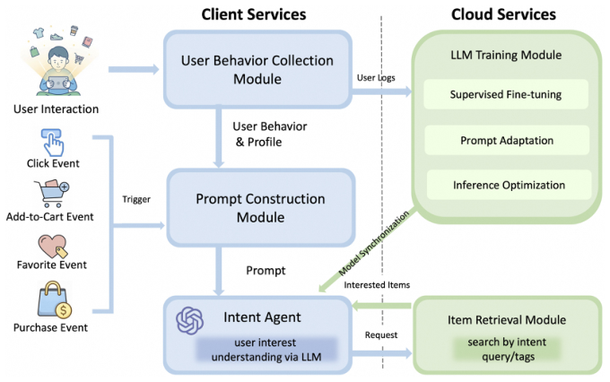
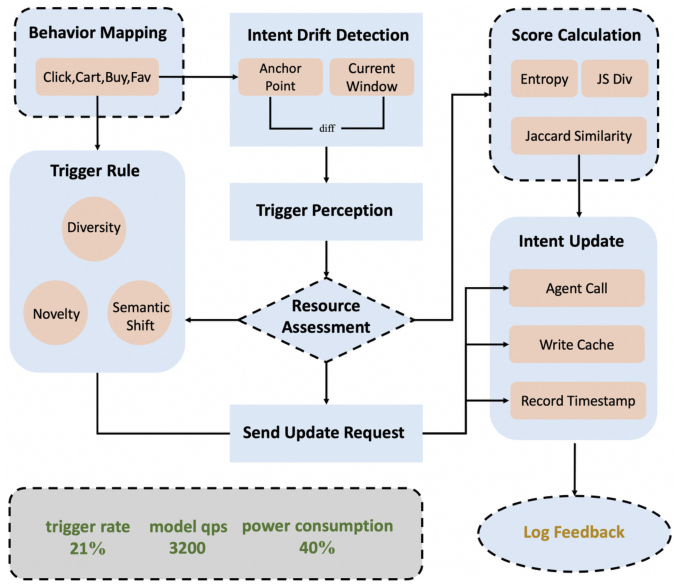
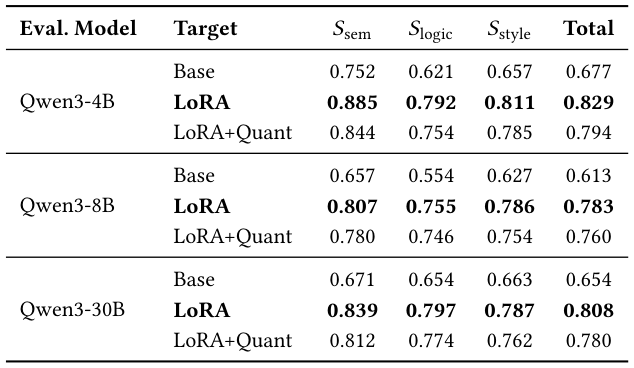
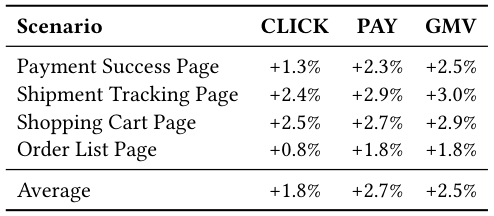
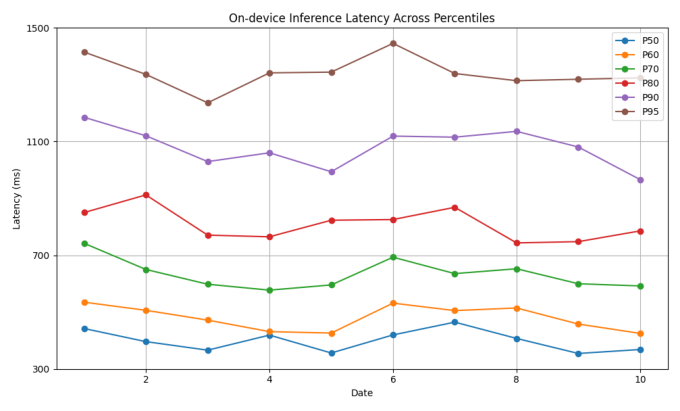

RecGPT-Mobile: On-Device Large Language Models for User Intent Understanding in Taobao Feed Recommendation (端侧大语言模型驱动的淘宝信息流推荐用户意图理解)
- 会议/期刊: SIGIR 2026 (49th International ACM SIGIR Conference, Melbourne, VIC, Australia)
- 推荐链路定位: 召回触发 / 意图理解前置模块 (Intent Agent → Item Retrieval)，服务于信息流推荐与搜索意图预测
- 研究方向: 大语言模型推荐 (LLM4Rec) / 对话与智能体推荐 (Agentic Recommendation)
- 论文原文: https://arxiv.org/abs/2605.04726v1
- 开源代码: 暂未开源（原文与预提取均未发现开源代码链接）
TL;DR (核心速览)
针对云端 LLM 意图理解推理成本高、无法实时感知移动端用户意图快速漂移的痛点，本文提出 RecGPT-Mobile：将 Qwen3-0.6B 经 LoRA 微调 + 量化后直接部署在手机端，作为"意图 Agent"把异构隐式行为序列翻译为显式搜索 query，并设计自适应 Prompt 构建（模板级 + 结构级 + 预算约束）与基于熵差/Jaccard/JS 散度的意图漂移触发机制以降低冗余推理。离线 LLM 自动评测（LoRA 总分 0.829 vs Base 0.677）与淘宝四场景一个月线上 A/B（千万级用户）显示平均 +1.8% CLICK、+2.7% PAY、+2.5% GMV。
Background & Motivation (背景与动机)
- 领域背景与主流范式: 现代电商推荐主流仍是云端集中式架构（特征中心 + 云服务器推理），近期 LLM4Rec 工作（HSTU、OneRec、RecGPT）把推荐重构为生成式/意图推理任务，显著提升语义理解能力。
- 现有方法局限 (Limitations of Prior Work):
- 通信延迟与意图感知滞后：云端架构存在端-云通信延迟，难以捕捉移动场景下快速演化的用户意图；
- 推理成本高：LLM 参数量大、算力密集，云端部署的推理开销难以支撑高频实时调用；
- 端侧资源约束：直接在资源受限设备上部署复杂 LLM 不可行，需依赖量化/剪枝/蒸馏等压缩手段。
- 核心挑战 (Key Challenge): 端侧推荐系统（EdgeRec、快手端上实时框架、DIR）已证明本地处理可降延迟，但如何在严格延迟/内存/Token 预算下运行 LLM 并保持意图理解质量，同时避免行为稳定时的频繁无效推理，是尚未解决的矛盾。
- 核心洞察与切入点 (Key Insight): 作者认为意图理解不必每次行为都重算——只有当用户意图发生"显著漂移"时才触发 LLM 推理；同时 Prompt 应随行为特征与场景自适应裁剪以适配端侧预算。这一"按需推理 + 预算感知 Prompt"的组合是本文的核心切入点。
Problem Formulation & Method (问题定义与方法架构)
1. 符号定义与输入表征 (Notations & Input Representations)
- 用户行为序列：\(\mathcal{B}=\{(i_1,a_1,t_1),(i_2,a_2,t_2),\dots,(i_T,a_T,t_T)\}\)，其中 \(i_T\) 为交互物品，\(a_T\in\{\text{click},\text{cart},\text{favorite},\text{purchase}\}\) 为行为类型，\(t_T\) 为时间戳。
- 目标：在资源约束下预测下一潜在搜索 query \(q\in\mathcal{Q}\)： $\(q^*=\arg\max_{q\in\mathcal{Q}} P(q\mid \mathcal{B}) \quad \text{s.t. Resource Constraints}\)$
- 行为特征向量：\(\Phi(\mathcal{B})=[\Phi_{act},\Phi_{rec},\Phi_{div},\Phi_{freq}]\)，分别编码行为类型分布、时间近因性、语义多样性与交互频次。
- 端侧预算：\(C_{\max}\)（延迟/内存/Token 上限）。
2. 整体流水线 (Overall Architecture)
系统由五个模块构成：用户行为采集模块（本地缓存行为）→ Prompt 构建模块（将原始行为与画像合成为结构化 Prompt）→ 意图 Agent（LLM 将行为信号转为显式意图 query）→ 物品召回模块（以意图 query 检索并回传物品）→ LLM 训练模块（SFT、Prompt 适配与推理优化）。论文重点阐述训练模块与端侧推理优化。

图 1: RecGPT-Mobile 整体框架。
flowchart TD
A["用户行为采集模块: 本地缓存 (i,a,t) 序列"] --> B["Prompt 构建模块: 行为特征 Φ + 模板/结构自适应"]
B --> C["意图 Agent: 端侧 Qwen3-0.6B (LoRA+Quant)"]
C --> D["意图漂移触发: Δintent > τ 才推理"]
D --> E["物品召回模块: 以意图 query 检索"]
E --> F["客户端信息流展示"]
C -.训练.-> G["LLM 训练模块: SFT + Prompt 适配 + 推理优化"]3. 核心模块设计与数学原理 (Key Designs & Formulations)
(1) 监督微调与训练样本构造：训练集由四类互补样本构成（表 1）：行为驱动样本（购买/搜索日志，60%）、共购关系样本（物品共购矩阵，20%）、LLM 增强样本（GPT 改写提升语言多样性，15%）、人工标注样本（质量校准，5%）。Prompt 1 将时间戳与行为序列作为输入，要求模型输出最可能的搜索 query。
(2) 自适应 Prompt 构建（算法 1）：分四阶段—— - 特征提取：计算 \(\Phi(\mathcal{B})=[\Phi_{act},\Phi_{rec},\Phi_{div},\Phi_{freq}]\)； - 模板级适配：对候选模板 \(T_k\) 用轻量打分器 \(M_{score}\) 打分 \(\alpha_k\)，经 softmax（温度 \(\beta\)）选最优模板 \(T^*=\arg\max_{T_k\in\mathcal{T}_s} p_k\)； - 结构级适配：对每个候选组件 \(c\)，计算边际效用 \(\Delta(c)=M_{score}(P\oplus c,\Phi,s)-M_{score}(P,\Phi,s)\)，仅当 \(\Delta(c)>\tau\) 且 \(\text{Cost}(P\oplus c)\le C_{\max}\) 时并入； - 预算约束与定稿：在 \(\text{Cost}(P')\le C_{\max}\) 下取效用最大的 \(P^*\)，再实例化具体行为 token。
(3) 端侧意图漂移触发机制：将滑窗内每次交互映射为离散语义标签（类目/品牌/意图类型），得到标签分布 \(P_\mathcal{B}\)。从三个视角量化意图漂移： - 熵差：\(\Delta H=|H(P_\mathcal{B}^{(t)})-H(P_\mathcal{B}^{(t-1)})|\)，\(H(P_\mathcal{B})=-\sum_k P_\mathcal{B}(k)\log P_\mathcal{B}(k)\)； - 语义重叠：\(\text{JA}(\mathcal{Z}^{(t)},\mathcal{Z}^{(t-1)})=\frac{|\mathcal{Z}^{(t)}\cap\mathcal{Z}^{(t-1)}|}{|\mathcal{Z}^{(t)}\cup\mathcal{Z}^{(t-1)}|}\)； - 分布漂移：\(\text{JS}(P_\mathcal{B}^{(t)},P_\mathcal{B}^{(t-1)})=\frac12\text{KL}(P_\mathcal{B}^{(t)}\|M)+\frac12\text{KL}(P_\mathcal{B}^{(t-1)}\|M)\)，\(M=\frac12(P_\mathcal{B}^{(t)}+P_\mathcal{B}^{(t-1)})\)。
融合为单一漂移分数： $\(\Delta_{intent}=\lambda_1\Delta H+\lambda_2(1-\text{JA})+\lambda_3\text{JS}(P_\mathcal{B}^{(t)},P_\mathcal{B}^{(t-1)}),\quad \lambda_1+\lambda_2+\lambda_3=1\)$ 仅当 \(\Delta_{intent}>\tau\) 时才触发 LLM 更新 Prompt 并重新预测。线上取 \(\lambda_1=0.4,\lambda_2=0.3,\lambda_3=0.3,\tau=0.8\)（启发式搜索确定）。

图 2: 移动端意图 Agent 触发流水线。
4. 训练目标、负采样与推理复杂度 (Optimization, Negative Sampling & Complexity)
- 损失函数: 原文采用监督微调（LoRA），未给出显式损失函数公式（标准自回归交叉熵 SFT，原文未展开）；无对比学习/温度系数 \(\tau\) 的损失项（文中 \(\tau\) 为触发阈值与结构适配阈值，非 InfoNCE 温度）。
- 训练负采样策略: 本文为生成式 next-query 预测，免负采样（自回归生成目标 query），原文未报告负采样设计。
- 时间与空间复杂度: 端侧部署 Qwen3-0.6B-Quant（量化版），通过意图漂移触发机制减少冗余推理；原文未给出理论复杂度分析，仅报告真实设备 P50–P95 延迟曲线（图 3），并指出高百分位延迟上升但趋势稳定、无系统性退化。离线训练/量化耗时原文未报告。
Experimental Setup & Evaluation Protocol (实验设置与评估协议)
- 数据集统计与预处理: 原文未提供标准基准数据集统计表（无 #Users/#Items/#Interactions/稀疏度表格），实验基于淘宝真实生产日志（购买/搜索日志、共购矩阵）与人工标注数据。训练样本构成如下：
| 样本类型 (Sample Type) | 数据来源 (Data Source) | 占比 (Ratio) |
|---|---|---|
| 行为驱动 (Behavior-driven) | 购买 & 搜索日志 | 60% |
| 共购关系 (Co-purchase) | 物品共购矩阵 | 20% |
| LLM 增强 (LLM-based) | GPT 改写 | 15% |
| 人工标注 (Human-annotated) | 人工标注 | 5% |
- 数据划分方式 (Splitting Strategy): 原文未明确报告训练/验证/测试划分细节（无 LOO / Ratio / 全局时间戳切分的显式说明），存在审稿层面的可复现性缺口。
- 排名评测协议 (Ranking Protocol): 本文不采用传统 Top-K 排序评测（无 Full-Ranking / Sampled Ranking、无 Recall@K / NDCG@K）。离线采用 LLM 自动评测（Prompt 2），将生成质量分解为语义一致性 \(S_{sem}\)、逻辑连贯性 \(S_{logic}\)、表达质量 \(S_{style}\) 三个 \([0,1]\) 归一化子分并加权聚合为 Total；线上采用真实流量 A/B 测试。
- 评价指标与显著性检验: 离线指标为 \(S_{sem}/S_{logic}/S_{style}\)/Total；线上指标为 CLICK、PAY、GMV 相对提升。原文未报告多随机种子方差或配对显著性检验（\(p\) 值），仅以"definitely significant improvement"定性表述。
Key Experimental Results (核心实验结果)
1. 主实验对比 (Main Results)
离线 LLM 自动评测（基座 Qwen3-0.6B，对比 Base / LoRA / LoRA+Quant，评测模型分别为 Qwen3-4B/8B/30B）：

表 2: 基于 LLM 的自动评测结果。
| 评测模型 | 目标模型设置 | \(S_{sem}\) | \(S_{logic}\) | \(S_{style}\) | Total |
|---|---|---|---|---|---|
| Qwen3-4B | Base | 0.752 | 0.621 | 0.657 | 0.677 |
| Qwen3-4B | LoRA | 0.885 | 0.792 | 0.811 | 0.829 |
| Qwen3-4B | LoRA+Quant | 0.844 | 0.754 | 0.785 | 0.794 |
| Qwen3-8B | Base | 0.657 | 0.554 | 0.627 | 0.613 |
| Qwen3-8B | LoRA | 0.807 | 0.755 | 0.786 | 0.783 |
| Qwen3-8B | LoRA+Quant | 0.780 | 0.746 | 0.754 | 0.760 |
| Qwen3-30B | Base | 0.671 | 0.654 | 0.663 | 0.654 |
| Qwen3-30B | LoRA | 0.839 | 0.797 | 0.787 | 0.808 |
| Qwen3-30B | LoRA+Quant | 0.812 | 0.774 | 0.762 | 0.780 |
关键结论：LoRA 微调在所有评测模型下均取得最高分（如 4B 评测下 Total 0.829 vs Base 0.677，相对提升约 +22.5%）；量化后 LoRA 仅轻微下降（4B 下 0.794，保留约 95.8% 的 LoRA 总分），验证端侧量化部署的可行性。
2. 消融实验与控制变量分析 (Ablation Study)
原文未设置传统模块级消融实验（无移除自适应 Prompt / 触发机制 / 各样本类型的对照表）。可视为"消融"的对照为表 2 中 Base → LoRA → LoRA+Quant 的三档设置：LoRA 贡献最大（语义分从 0.752 提升至 0.885），量化带来可控退化。未控制参数量对齐或进行组件级贡献拆解，这是实验扎实度的主要短板。
3. 稀疏度/冷启动分桶与超参敏感度 (Sparsity Buckets & Hyperparameters)
- 分桶表现: 原文未报告长尾物品/冷启动用户分桶结果。
- 关键超参数: 线上取 \(\lambda_1=0.4,\lambda_2=0.3,\lambda_3=0.3,\tau=0.8\)，由"实验启发式搜索"确定；原文未给出敏感度曲线。
- 线上 A/B 测试结果: 淘宝移动端四个信息流场景，为期一个月，覆盖千万级用户，部署模型为 Qwen3-0.6B-Quant：

表 3: 线上实验结果。
| 场景 (Scenario) | CLICK | PAY | GMV |
|---|---|---|---|
| 支付成功页 (Payment Success Page) | +1.3% | +2.3% | +2.5% |
| 物流跟踪页 (Shipment Tracking Page) | +2.4% | +2.9% | +3.0% |
| 购物车页 (Shopping Cart Page) | +2.5% | +2.7% | +2.9% |
| 订单列表页 (Order List Page) | +0.8% | +1.8% | +1.8% |
| 平均 (Average) | +1.8% | +2.7% | +2.5% |
端侧延迟方面（图 3），真实设备上 P50–P95 延迟随百分位上升而增加，但跨日期趋势一致，表明模型在尾部延迟放大条件下仍保持稳定执行，百分位曲线间的适度差异反映真实设备差异而非系统性性能退化。

图 3: 真实移动设备上不同百分位的运行延迟。
Highlights, Limitations & Critiques (亮点、局限与审稿级批判)
- 核心亮点与可迁移性:
- 首个端侧 LLM 推荐系统落地：将 0.6B 量化 LLM 直接部署手机端做意图理解，为 LLM4Rec 的"端云协同"提供了可复制的工程范式；
- 意图漂移触发机制（熵差 + Jaccard + JS 散度融合）具有强普适性，可迁移到任意"按需调用大模型"的推荐/对话系统中，直接降低推理成本；
- 预算感知的自适应 Prompt 构建（模板级 + 结构级 + 边际效用剪枝）为端侧资源约束下的 Prompt 工程提供了可复用算法框架；
- 千万级用户、一个月、四场景的线上 A/B 结果（+1.8% CLICK / +2.7% PAY / +2.5% GMV）具备较强工业说服力。
- 局限性与审稿视角批判 (Critical Limitations):
- 评估协议不严谨：离线仅用 LLM 自动评测（且评测模型与被评模型同属 Qwen3 家族，存在自偏好偏差风险），缺少与传统 next-query 预测基线（如序列模型、云侧 LLM）的定量对比，也无 Recall@K/NDCG@K 等标准排序指标；
- 缺少模块级消融：自适应 Prompt、触发机制、四类训练样本各自的贡献未被拆解，无法判断性能增益来源；
- 可复现性缺口：未报告数据划分策略、训练超参、量化方案细节（bit 数、量化算法）、端侧内存占用与峰值显存，也未开源代码；
- 统计严谨性不足：线上提升未给出置信区间或显著性检验，离线分数无多随机种子方差；
- 触发阈值 \(\tau=0.8\) 与 \(\lambda\) 权重为启发式设定，缺少敏感度分析，跨场景泛化性存疑；
- 论文仅 5 页（短文），方法细节（如 Item Retrieval 模块如何消费意图 query、与主推荐链路的融合方式）阐述较浅。
Rating (四维评分)
- 方法创新性 (Novelty): ⭐⭐⭐⭐（端侧 LLM + 意图漂移触发 + 预算感知 Prompt 的组合具有首创性与工程创新）
- 评估协议与实验扎实度 (Protocol & Experiments): ⭐⭐⭐（线上 A/B 规模大且真实，但离线评测单一、缺消融与标准排序指标、无显著性检验）
- 写作与数学规范度 (Clarity & Rigor): ⭐⭐⭐（触发机制公式清晰，但损失函数、数据划分、复杂度分析缺失，5 页篇幅限制细节）
- 工业落地与复现价值 (Industrial & Practical Value): ⭐⭐⭐⭐（真实生产系统千万级用户验证，端侧部署路径明确；但未开源、关键实现细节不足影响复现）